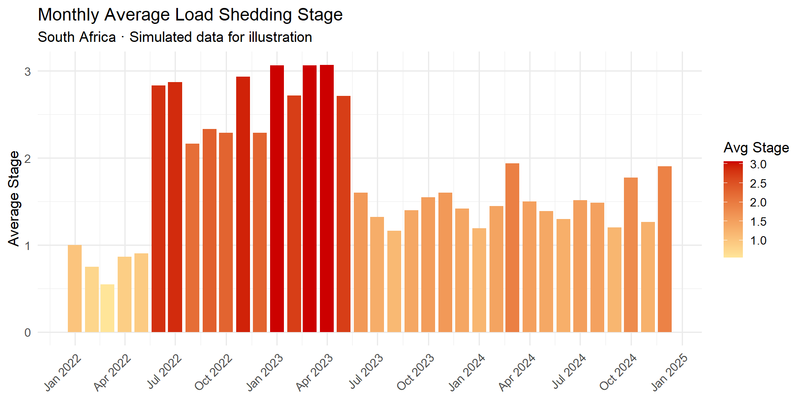
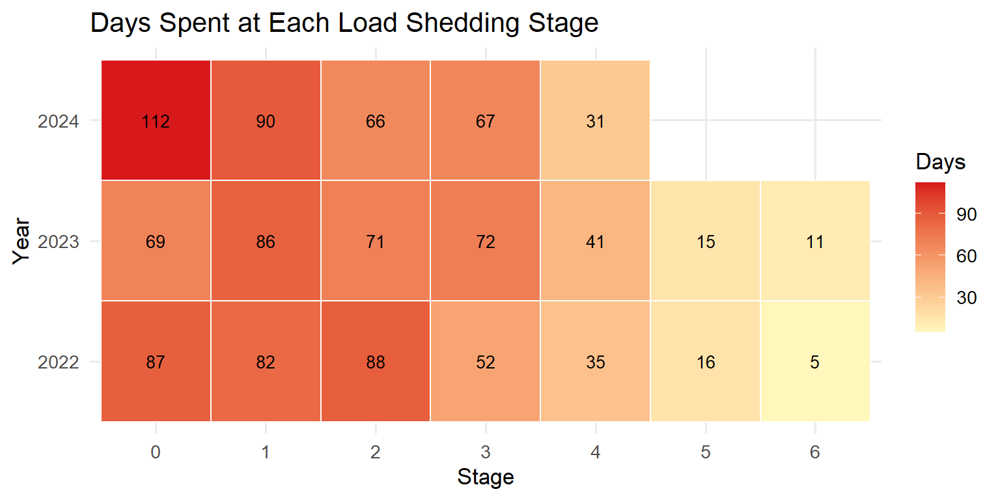

Code
library(tidyverse)
library(lubridate)
library(scales)January 15, 2025
Load shedding has become a defining feature of life in South Africa. In this post I use R to build a clear picture of how shedding frequency and severity changed over time, using publicly available Eskom stage data.
For this example we simulate a plausible load shedding dataset. In a real post you would load actual Eskom data here (e.g. from an API or a downloaded CSV).
set.seed(42)
# Simulate daily load shedding stages across 2022–2024
dates <- seq(as.Date("2022-01-01"), as.Date("2024-12-31"), by = "day")
stage <- ifelse(
dates < as.Date("2022-06-01"),
sample(0:2, length(dates), replace = TRUE, prob = c(0.5, 0.3, 0.2)),
ifelse(
dates < as.Date("2023-06-01"),
sample(0:6, length(dates), replace = TRUE, prob = c(0.1, 0.15, 0.2, 0.25, 0.15, 0.1, 0.05)),
sample(0:4, length(dates), replace = TRUE, prob = c(0.3, 0.25, 0.2, 0.15, 0.1))
)
)
df <- tibble(date = dates, stage = stage)
head(df)# A tibble: 6 × 2
date stage
<date> <int>
1 2022-01-01 2
2 2022-01-02 2
3 2022-01-03 0
4 2022-01-04 2
5 2022-01-05 1
6 2022-01-06 1df_monthly <- df |>
mutate(month = floor_date(date, "month")) |>
group_by(month) |>
summarise(avg_stage = mean(stage), .groups = "drop")
ggplot(df_monthly, aes(x = month, y = avg_stage, fill = avg_stage)) +
geom_col(width = 25) +
scale_fill_gradient(low = "#ffe599", high = "#cc0000", name = "Avg Stage") +
scale_x_date(date_breaks = "3 months", date_labels = "%b %Y") +
scale_y_continuous(breaks = 0:6) +
labs(
title = "Monthly Average Load Shedding Stage",
subtitle = "South Africa · Simulated data for illustration",
x = NULL,
y = "Average Stage"
) +
theme_minimal(base_size = 13) +
theme(axis.text.x = element_text(angle = 45, hjust = 1))
df |>
mutate(year = year(date)) |>
count(year, stage) |>
mutate(stage = factor(stage)) |>
ggplot(aes(x = stage, y = factor(year), fill = n)) +
geom_tile(colour = "white", linewidth = 0.5) +
geom_text(aes(label = n), size = 3.5) +
scale_fill_gradient(low = "#fff7bc", high = "#d7191c", name = "Days") +
labs(
title = "Days Spent at Each Load Shedding Stage",
x = "Stage",
y = "Year"
) +
theme_minimal(base_size = 13)
This post uses simulated data for illustration purposes. Replace the data block with real Eskom data for a production analysis.
---
title: "South Africa's Load Shedding: A Data Story"
description: "Visualising the frequency and severity of Eskom load shedding stages from 2022 to 2024 using R and ggplot2."
date: 2025-01-15
categories: [R, ggplot2, South Africa, Energy]
image: thumbnail.png
---
## Background
Load shedding has become a defining feature of life in South Africa. In this
post I use R to build a clear picture of how shedding frequency and severity
changed over time, using publicly available Eskom stage data.
---
## Setup
```{r}
#| label: setup
#| message: false
#| warning: false
library(tidyverse)
library(lubridate)
library(scales)
```
---
## Simulated Data
For this example we simulate a plausible load shedding dataset. In a real
post you would load actual Eskom data here (e.g. from an API or a downloaded CSV).
```{r}
#| label: data
set.seed(42)
# Simulate daily load shedding stages across 2022–2024
dates <- seq(as.Date("2022-01-01"), as.Date("2024-12-31"), by = "day")
stage <- ifelse(
dates < as.Date("2022-06-01"),
sample(0:2, length(dates), replace = TRUE, prob = c(0.5, 0.3, 0.2)),
ifelse(
dates < as.Date("2023-06-01"),
sample(0:6, length(dates), replace = TRUE, prob = c(0.1, 0.15, 0.2, 0.25, 0.15, 0.1, 0.05)),
sample(0:4, length(dates), replace = TRUE, prob = c(0.3, 0.25, 0.2, 0.15, 0.1))
)
)
df <- tibble(date = dates, stage = stage)
head(df)
```
---
## Monthly Average Stage
```{r}
#| label: fig-monthly
#| fig-cap: "Average daily load shedding stage by month"
#| fig-width: 10
#| fig-height: 5
df_monthly <- df |>
mutate(month = floor_date(date, "month")) |>
group_by(month) |>
summarise(avg_stage = mean(stage), .groups = "drop")
ggplot(df_monthly, aes(x = month, y = avg_stage, fill = avg_stage)) +
geom_col(width = 25) +
scale_fill_gradient(low = "#ffe599", high = "#cc0000", name = "Avg Stage") +
scale_x_date(date_breaks = "3 months", date_labels = "%b %Y") +
scale_y_continuous(breaks = 0:6) +
labs(
title = "Monthly Average Load Shedding Stage",
subtitle = "South Africa · Simulated data for illustration",
x = NULL,
y = "Average Stage"
) +
theme_minimal(base_size = 13) +
theme(axis.text.x = element_text(angle = 45, hjust = 1))
```
---
## Days at Each Stage Per Year
```{r}
#| label: fig-heatmap
#| fig-cap: "Distribution of load shedding stages per year"
#| fig-width: 8
#| fig-height: 4
df |>
mutate(year = year(date)) |>
count(year, stage) |>
mutate(stage = factor(stage)) |>
ggplot(aes(x = stage, y = factor(year), fill = n)) +
geom_tile(colour = "white", linewidth = 0.5) +
geom_text(aes(label = n), size = 3.5) +
scale_fill_gradient(low = "#fff7bc", high = "#d7191c", name = "Days") +
labs(
title = "Days Spent at Each Load Shedding Stage",
x = "Stage",
y = "Year"
) +
theme_minimal(base_size = 13)
```
---
## Key Observations
- 2022 saw a dramatic escalation into higher stages from mid-year
- 2023 was the worst year on record, with frequent Stage 4–6 events
- 2024 showed tentative improvement, with more Stage 0 days returning
::: {.callout-note}
This post uses **simulated** data for illustration purposes. Replace the data
block with real Eskom data for a production analysis.
:::